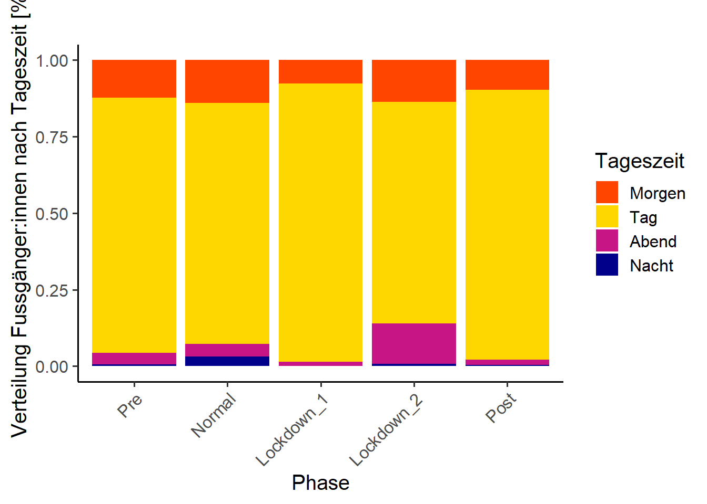

Nachdem wir die Projektstruktur aufgebaut haben und die Daten vorbereitet (inkl. aggregiert) sind, machen wir uns an die deskriptive Analyse. Dies macht eigentlich immer Sinn. Bevor mach sich an die schliessende Statistik macht, muss man ein “Gefühl” für die Daten bekommen. Dies funktioniert am einfachsten mit explorativen Analysen.
Wir interessieren uns in den Analysen für 5 Zeitabschnitte:
von Anfang Untersuchungsperiode bis 1 Jahr vor Lockdown 1 (pre)
1 Jahr vor Corona (normal)
Lockdown 1
Lockdown 2
Ende 2. Lockdown bis Ende Untersuchungsperiode
Plottet den Verlauf der monatlichen Besuchszahlen an eurer Zählstelle. Auf der x-Achse steht dabei dabei Jahr und Monat (gespeichert im df depo_m), auf der y-Achse die monatlichen Besuchszahlen. Zeichnet auch die beiden Lockdown ein (Hinweis: rundet das Start- und Enddatum der Lockdowns auf den Monat, da im Plot die monatlichen Zahlen gezeigt werden).
ggplot(data = depo_m, mapping =aes(Ym, Total, group =1))+# group 1 braucht R, dass aus den Einzelpunkten ein Zusammenhang hergestellt wird# zeichne Lockdown 1; ein einfaches Rechteck. bestimme mit min und max die Dimensionengeom_rect(mapping =aes(xmin="2020 3", xmax="2020 5",ymin =0, ymax=max(Total+(Total/100*10))), # das Rechteck soll 10 % grösser als die maximale Besuchszahl sein fill ="lightskyblue", alpha =0.4, colour =NA)+# zeichne Lockdown 2 ...+# zeichne die Liniegeom_line(...)+theme_linedraw(base_size =15)+ ...
Exportiert euren Plot mit ggsave() nach results. Breite = 20, Höhe = 10, Einheiten = cm, dpi = 1000
1b)
Nachdem wir wissen, wie sich die Besuchszahlen allgemein entwickelt haben, untersuchen wir wie sich diese während den unterschiedlichen Tageszeiten entwickelten.
Wie benötigen dazu wieder denselben Datensatz, dieselben x- und y-Achsen. Allerdings ergänzen wir den area-plot mit dem “fill”-Argument:
Speichert auch diesen Plot.
ggplot(depo_m_daytime, aes(Ym, Total, fill = Tageszeit)) +geom_area(position ="fill")+ ...
Aufgabe 2: Wochengang
Nachdem wir nun wissen, wie sich die Besuchszahlen während der Untersuchungsdauer monatlich entwickelt haben, möchten wir genauer untersuchen, wie sich die Zahlen je nach Phase (Pre, Normal, Lockdown 1, Lockdown 2 und Covid) auf die Wochentage verteilen.
2a)
Berechnet zuerst die Totale Anzahl pro Wochentag pro Phase.
ggplot(data = depo_d)+geom_boxplot(mapping =aes(x= Wochentag, y = Total, fill = Phase))+ ...
Exportiert auch diesen Plot mit ggsave(). Welche Breite und Höhe passt hier?
2c)
Sind die Unterschiede zwischen Werktag und Wochenende wirklich signifikant? Falls ja, in allen Phasen oder nur während bestimmter?
Prüft das pro Phase mit einem einfachen t.test.
Aufgabe 3: Tagesgang
Vom Grossen zum Kleinen, von der Übersicht ins Detail. Jetzt widmen wir uns dem Tagesgang, das heisst der Verteilung der Besuchenden auf die 24 Tagesstunden je nach Phase.
3a)
Berechnet zuerst den Mittelwert der Totalen Besuchszahlen pro Wochentag pro Stunde pro Phase. (ganz ähnlich wie unter 2a) und speichert das df unter Mean_h.
ggplots haben Daten lieber im Format long als wide.
3b)
Plottet den Tagesgang, unterteilt nach den 7 Wochentagen nun für unsere 5 Phasen.
Schliesslich berechnen wir noch einige Kennzahlen (Anzahl Passagen, Richtungsverteilung, …).
4a)
Gruppiert nach Phase und Tageszeit und berechnet dieses mal die Summe (nicht den Durchschnitt) Total, IN und OUT (ähnlich wie in 2a und 3a).
Nehmt dafür das vorbereitete df “depo_daytime”
Speichert das Ergebnis als .csv
4b)
Die Zeitreihen der 5 Phasen unterscheiden sich deutlich voneinander. Totale Summen sind da kaum miteinander vergleichbar, besser eignet sich der Durchschnitt oder der Median.
Gruppiert nach Phase und Tageszeit und berechnet den Durchschnitt Total, IN und OUT und speichert das df unter mean_phase_d.
Ergänzt das mit der prozentualen Richtungsverteilung
mean_phase_d <- mean_phase_d %>%mutate(Proz_IN =round(100/Total*IN, 1)) %>%# berechnen und auf eine Nachkommastelle runden ...
4c)
Schliesslich soll das Ergebnis noch visualisiert werden.
Erstellt einen Plot nach untenstehendem Beispiel und speichert ihn:

Quellcode
# KW 43+44: Übung Deskriptiv```{r include=FALSE, echo = FALSE}# Benoetigte Bibliotheken ####library(tidyverse) # Data wrangling und pipinglibrary(lubridate) # Arbeiten mit Datumsformatenlibrary(suncalc) # berechne Tageszeiten abhaengig vom Sonnenstandlibrary(ggpubr) # to arrange multiple plots in one graphlibrary(PerformanceAnalytics) # Plotte Korrelationsmatrixlibrary(MuMIn) # Multi-Model Inferencelibrary(AICcmodavg)# Modellaverageinglibrary(fitdistrplus)# Prueft die Verteilung in Datenlibrary(lme4) # Multivariate Modellelibrary(blmeco) # Bayesian data analysis using linear modelslibrary(sjPlot) # Plotten von Modellergebnissen (tab_model)library(lattice) # einfaches plotten von Zusammenhängen zwischen Variablen# definiere ein farbset zur wiedervewendungmycolors <-c("orangered","gold", "mediumvioletred", "darkblue")# Start und Ende ##### Untersuchungszeitraum, ich waehle hier das Jahr 2019 bis und mit Sommer 2021depo_start <-as.Date("2017-01-01")depo_end <-as.Date("2022-7-31")# Start und Ende Lockdown# definieren, wichtig fuer die spaeteren Auswertungenlock_1_start_2020 <-as.Date("2020-03-16")lock_1_end_2020 <-as.Date("2020-05-11")lock_2_start_2021 <-as.Date("2020-12-22")lock_2_end_2021 <-as.Date("2021-03-01")# Ebenfalls muessen die erste und letzte Kalenderwoche der Untersuchungsfrist definiert werden# Diese werden bei Wochenweisen Analysen ebenfalls ausgeklammert da sie i.d.R. unvollstaendig sindKW_start <-isoweek(depo_start)KW_end <-isoweek(depo_end)# Erster und letzter Tag der Ferien# je nach Untersuchungsdauer muessen hier weitere oder andere Ferienzeiten ergaenzt werden# (https://www.schulferien.org/schweiz/ferien/2020/)Winterferien_2016_start <-as.Date("2017-01-01") Winterferien_2016_ende <-as.Date("2017-01-08")Fruehlingsferien_2017_start <-as.Date("2017-04-15") Fruehlingsferien_2017_ende <-as.Date("2017-04-30") Sommerferien_2017_start <-as.Date("2017-07-15") Sommerferien_2017_ende <-as.Date("2017-08-20") Herbstferien_2017_start <-as.Date("2017-10-07") Herbstferien_2017_ende <-as.Date("2017-10-22") Winterferien_2017_start <-as.Date("2017-12-23") Winterferien_2017_ende <-as.Date("2018-01-07") Fruehlingsferien_2018_start <-as.Date("2018-04-21") Fruehlingsferien_2018_ende <-as.Date("2018-05-06") Sommerferien_2018_start <-as.Date("2018-07-14") Sommerferien_2018_ende <-as.Date("2018-08-19") Herbstferien_2018_start <-as.Date("2018-10-06") Herbstferien_2018_ende <-as.Date("2018-10-21") Winterferien_2018_start <-as.Date("2018-12-22") Winterferien_2018_ende <-as.Date("2019-01-06") Fruehlingsferien_2019_start <-as.Date("2019-04-20") Fruehlingsferien_2019_ende <-as.Date("2019-05-05") Sommerferien_2019_start <-as.Date("2019-07-13") Sommerferien_2019_ende <-as.Date("2019-08-18") Herbstferien_2019_start <-as.Date("2019-10-05") Herbstferien_2019_ende <-as.Date("2019-10-20") Winterferien_2019_start <-as.Date("2019-12-21") Winterferien_2019_ende <-as.Date("2020-01-05")Fruehlingsferien_2020_start <-as.Date("2020-04-11")Fruehlingsferien_2020_ende <-as.Date("2020-04-26")Sommerferien_2020_start <-as.Date("2020-07-11")Sommerferien_2020_ende <-as.Date("2020-08-16")Herbstferien_2020_start <-as.Date("2020-10-03")Herbstferien_2020_ende <-as.Date("2020-10-18")Winterferien_2020_start <-as.Date("2020-12-19")Winterferien_2020_ende <-as.Date("2021-01-03")Fruehlingsferien_2021_start <-as.Date("2021-04-24")Fruehlingsferien_2021_ende <-as.Date("2021-05-09")Sommerferien_2021_start <-as.Date("2021-07-17")Sommerferien_2021_ende <-as.Date("2021-08-22")Herbstferien_2021_start <-as.Date("2021-10-09")Herbstferien_2021_ende <-as.Date("2021-10-24")Winterferien_2021_start <-as.Date("2021-12-18")Winterferien_2021_ende <-as.Date("2022-01-02")Fruehlingsferien_2022_start <-as.Date("2022-04-16")Fruehlingsferien_2022_ende <-as.Date("2022-05-01")Sommerferien_2022_start <-as.Date("2022-07-16")Sommerferien_2022_ende <-as.Date("2022-08-21")Herbstferien_2022_start <-as.Date("2022-10-08")Herbstferien_2022_ende <-as.Date("2022-10-23")Winterferien_2022_start <-as.Date("2022-12-24")Winterferien_2022_ende <-as.Date("2023-01-08")#.################################################################################################# 1. DATENIMPORT ######.################################################################################################# Beim Daten einlesen koennen sogleich die Datentypen und erste Bereinigungen vorgenommen werden# 1.1 Zaehldaten ##### Die Zaehldaten des Wildnispark wurden vorgaengig bereinigt. z.B. wurden Stundenwerte # entfernt, an denen am Zaehler Wartungsarbeiten stattgefunden haben.# lese die Daten ein # Je nach Bedarf muss der Speicherort sowie der Dateiname angepasst werdendepo <-read.csv("./data/211_sihlwaldstrasse_2017_2022.csv", sep =";")# Hinweis zu den Daten:# In hourly analysis format, the data at 11:00 am corresponds to the counts saved between # 11:00 am and 12:00 am.# Anpassen der Datentypen und erstes Sichtenstr(depo)depo <- depo |>mutate(Datum =as.character(Datum)) |>mutate(Datum =as.Date(Datum, format ="%Y%m%d"))# Schneide das df auf den gewuenschten Zeitraum zu# filter(Datum >= depo_start, Datum <= depo_end) # das Komma hat die gleiche Funktion wie ein &# In dieser Auswertung werden nur Personen zu Fuss betrachtet!# it select werden spalten ausgewaehlt oder eben fallengelassendepo <- depo |> dplyr::select(-c(Velo_IN, Velo_OUT))# Berechnen des Totals, da dieses in den Daten nicht vorhanden istdepo <- depo|>mutate(Total = Fuss_IN + Fuss_OUT)# Entferne die NA's in dem df.depo <-na.omit(depo)# 1.2 Meteodaten ##### Einlesenmeteo <-read.csv("./data/order_105742_data.txt", sep =";")# Datentypen setzen# Das Datum wird als Integer erkannt. Zuerst muss es in Text umgewaldelt werden aus dem dann# das eigentliche Datum herausgelesen werden kannmeteo <-transform(meteo, time =as.Date(as.character(time), "%Y%m%d"))# Die eigentlichen Messwerte sind alle nummerischmeteo <- meteo|>mutate(tre200jx =as.numeric(tre200jx))|>mutate(rre150j0 =as.numeric(rre150j0))|>mutate(sremaxdv =as.numeric(sremaxdv)) |>filter(time >= depo_start, time <= depo_end) # schneide dann auf Untersuchungsdauer# Was ist eigentlich Niederschlag:# https://www.meteoschweiz.admin.ch/home/wetter/wetterbegriffe/niederschlag.html# Filtere Werte mit NAmeteo <- meteo |>filter(!is.na(stn)) |>filter(!is.na(time))|>filter(!is.na(tre200jx))|>filter(!is.na(rre150j0))|>filter(!is.na(sremaxdv))# Pruefe ob alles funktioniert hatstr(meteo)sum(is.na(meteo)) # zeigt die Anzahl NA's im data.frame an#.################################################################################################# 2. VORBEREITUNG DER DATEN ######.################################################################################################# 2.1 Convinience Variablen ##### fuege dem Dataframe (df) die Wochentage hinzudepo <- depo |>mutate(Wochentag =weekdays(Datum)) |># R sortiert die Levels aplhabetisch. Da das in unserem Fall aber sehr unpraktisch ist,# muessen die Levels manuell manuell bestimmt werdenmutate(Wochentag = base::factor(Wochentag, levels =c("Montag", "Dienstag", "Mittwoch", "Donnerstag", "Freitag", "Samstag", "Sonntag"))) |># Werktag oder Wochenende hinzufuegenmutate(Wochenende =if_else(Wochentag =="Montag"| Wochentag =="Dienstag"| Wochentag =="Mittwoch"| Wochentag =="Donnerstag"| Wochentag =="Freitag", "Werktag", "Wochenende"))|>#Kalenderwoche hinzufuegenmutate(KW=isoweek(Datum))|># monat und Jahrmutate(Monat =month(Datum)) |>mutate(Jahr =year(Datum))#Lockdown # Hinweis: ich mache das nachgelagert, da ich die Erfahrung hatte, dass zu viele # Operationen in einem Schritt auch schon mal durcheinander erzeugen koennen.# Hinweis II: Wir packen alle Phasen (normal, die beiden Lockdowns und Covid aber ohne Lockdown)# in eine Spalte --> long ist schoener als widedepo <- depo |>mutate(Phase =if_else(Datum >= lock_1_start_2020 & Datum <= lock_1_end_2020,"Lockdown_1",if_else(Datum >= lock_2_start_2021 & Datum <= lock_2_end_2021,"Lockdown_2",if_else(Datum>= (lock_1_start_2020 -years(1)) & Datum < lock_1_start_2020,"Normal", if_else(Datum > lock_2_end_2021,"Post", "Pre")))))# hat das gepklappt?!unique(depo$Phase)# aendere die Datentypendepo <- depo |>mutate(Wochenende =as.factor(Wochenende)) |>mutate(KW =factor(KW)) |># mit factor() koennen die levels direkt einfach selbst definiert werden.# wichtig: speizfizieren, dass aus R base, ansonsten kommt es zu einem # mix-up mit anderen packagesmutate(Phase = base::factor(Phase, levels =c("Pre", "Normal", "Lockdown_1", "Lockdown_2", "Post")))str(depo)# Fuer einige Auswertungen muss auf die Stunden als nummerischer Wert zurueckgegriffen werdendepo$Stunde <-as.numeric(format(as.POSIXct(depo$Zeit,format="%H:%M:%S"),"%H"))# ersetze 0 Uhr mit 24 Uhr (damit wir besser rechnen können)depo$Stunde[depo$Stunde ==0] <-24unique(depo$Stunde)typeof(depo$Stunde)# Die Daten wurden kalibriert. Wir runden sie fuer unserer Analysen auf Ganzzahlendepo$Total <-round(depo$Total, digits =0)depo$Fuss_IN <-round(depo$Fuss_IN, digits =0)depo$Fuss_OUT <-round(depo$Fuss_OUT, digits =0)# 2.2 Tageszeit hinzufuegen ##### Einteilung Standort ZuerichLatitude <-47.38598Longitude <-8.50806# Zur Berechnung der Tageslaege muessen wir zuerst den Start und das Ende der Sommer-# zeit definieren# https://www.schulferien.org/schweiz/zeit/zeitumstellung/So_start_2017 <-as.Date("2017-03-26") So_end_2017 <-as.Date("2017-10-29") So_start_2018 <-as.Date("2018-03-25") So_end_2018 <-as.Date("2018-10-28") So_start_2019 <-as.Date("2019-03-31") So_end_2019 <-as.Date("2019-10-27") So_start_2020 <-as.Date("2020-03-29")So_end_2020 <-as.Date("2020-10-25")So_start_2021 <-as.Date("2021-03-28")So_end_2021 <-as.Date("2021-10-31")So_start_2022 <-as.Date("2022-03-27")So_end_2022 <-as.Date("2022-10-30")# Welche Zeitzone haben wir eigentlich?# Switzerland uses Central European Time (CET) during the winter as standard time, # which is one hour ahead of Coordinated Universal Time (UTC+01:00), and # Central European Summer Time (CEST) during the summer as daylight saving time, # which is two hours ahead of Coordinated Universal Time (UTC+02:00).# https://en.wikipedia.org/wiki/Time_in_Switzerland# Was sind Astronomische Dämmerung und Golden Hour ueberhaupt?# https://sunrisesunset.de/sonne/schweiz/zurich-kreis-1-city/# https://www.rdocumentation.org/packages/suncalc/versions/0.5.0/topics/getSunlightTimes# Wir arbeiten mit folgenden Variablen:# "nightEnd" : night ends (morning astronomical twilight starts)# "goldenHourEnd" : morning golden hour (soft light, best time for photography) ends# "goldenHour" : evening golden hour starts# "night" : night starts (dark enough for astronomical observations)lumidata <-getSunlightTimes(date =seq.Date(depo_start, depo_end, by =1),keep =c("nightEnd", "goldenHourEnd", "goldenHour", "night"),lat = Latitude,lon = Longitude,tz ="CET")lumidata <- lumidata |>mutate(Jahreszeit =ifelse(date >= So_start_2017 & date <= So_end_2017 | date >= So_start_2018 & date <= So_end_2018 | date >= So_start_2019 & date <= So_end_2019 | date >= So_start_2020 & date <= So_end_2020 | date >= So_start_2021 & date <= So_end_2021 | date >= So_start_2022 & date <= So_end_2022, "Sommerzeit", "Winterzeit"))# CH ist im Im Sommer CET + 1. # Darum auf alle relevanten Spalten eine Stunde addieren# hinweis: ich verzichte hier auf ifelse, da es einfacher und nachvollziehbarer scheint,# hier mit einem filter die betreffenden Spalten zu waehlenlumidata_So <- lumidata |>filter(Jahreszeit=="Sommerzeit") |>mutate(nightEnd = nightEnd +hours(1),goldenHourEnd = goldenHourEnd +hours(1),goldenHour = goldenHour +hours(1),night = night +hours(1))lumidata_Wi <- lumidata |>filter(Jahreszeit=="Winterzeit") # verbinde sommer- und winterzeit wiederlumidata <-rbind(lumidata_So, lumidata_Wi) |>arrange(date)# change data typelumidata$date <-as.Date(lumidata$date, format="%Y-%m-%d")# drop unnecessary colslumidata <- lumidata |> dplyr::select(-lat, -lon)# jetzt haben wir alle noetigen Angaben zu Sonnenaufgang, Tageslaenge usw. # diese Angaben koennen wir nun mit unseren Zaehldaten verbinden:depo <-left_join(depo,lumidata, by =c("Datum"="date"))# aendere alle Zeit- und Datumsangaben so, dass sie gleich sind und miteinander verrechnet werden können.depo <- depo |>mutate(datetime =paste(Datum, Zeit)) |>mutate(datetime =as.POSIXct(datetime, format ="%Y-%m-%d %H:%M:%S"))|>mutate(nightEnd =as.POSIXct(nightEnd)) |>mutate(goldenHourEnd =as.POSIXct(goldenHourEnd)) |>mutate(goldenHourEnd = goldenHourEnd +hours(1)) |>mutate(goldenHour =as.POSIXct(goldenHour)) |>mutate(goldenHour = goldenHour -hours(1)) |>mutate(night =as.POSIXct(night))# im naechsten Schritt weise ich den Stunden die Tageszeiten Morgen, Tag, Abend und Nacht zu.# diese Zuweisung basiert auf der Einteilung gem. suncalc und eigener Definition.depo <- depo|>mutate(Tageszeit =if_else(datetime >= nightEnd & datetime <= goldenHourEnd, "Morgen",ifelse(datetime > goldenHourEnd & datetime < goldenHour, "Tag",ifelse(datetime >= goldenHour & datetime <= night,"Abend","Nacht")))) |>mutate(Tageszeit =factor(Tageszeit, levels =c("Morgen", "Tag", "Abend", "Nacht")))# # behalte die relevanten Vardepo <- depo |> dplyr::select(-nightEnd, -goldenHourEnd, -goldenHour, -night)#Plotte zum pruefn ob das funktioniert hatp <-ggplot(depo, aes(y = Datum, color = Tageszeit, x = Stunde))+geom_jitter()+scale_color_manual(values=mycolors)plotly::ggplotly(p)# bei mir hat der Zusatz der Tageszeit noch zu einigen NA-Wertren gefueht. # Diese loesche ich einfach:depo <-na.omit(depo)# hat das funktioniert?sum(is.na(depo))# 2.4 Aggregierung der Stundendaten zu ganzen Tagen ##### Zur Berechnung von Kennwerten ist es hilfreich, wenn neben den Stundendaten auch auf Ganztagesdaten# zurueckgegriffen werden kann# hier werden also pro Nutzergruppe und Richtung die Stundenwerte pro Tag aufsummiertdepo_d <- depo |>group_by(Datum, Wochentag, Wochenende, KW, Monat, Jahr, Phase) |>summarise(Total =sum(Fuss_IN + Fuss_OUT), Fuss_IN =sum(Fuss_IN),Fuss_OUT =sum(Fuss_OUT)) # Wenn man die Convinience Variablen als grouping variable einspeisst, dann werden sie in # das neue df uebernommen und muessen nicht nochmals hinzugefuegt werden# pruefe das dfhead(depo_d)# nun gruppieren wir nicht nur nach Tag sondern auch noch nach Tageszeitdepo_daytime <- depo |>group_by(Datum, Wochentag, Wochenende, KW, Monat, Jahr, Phase, Tageszeit) |>summarise(Total =sum(Fuss_IN + Fuss_OUT), Fuss_IN =sum(Fuss_IN),Fuss_OUT =sum(Fuss_OUT)) # Gruppiere die Werte nach Monatdepo_m <- depo |>group_by(Jahr, Monat) |>summarise(Total =sum(Total)) # sortiere das df aufsteigend (nur das es sicher stimmt)depo_m <-as.data.frame(depo_m)depo_m[with(depo_m, order(Jahr, Monat)),]depo_m <- depo_m |>mutate(Ym =paste(Jahr, Monat)) |># und mache eine neue Spalte, in der Jahr undmutate(Ym= lubridate::ym(Ym)) # formatiere als Datum# Gruppiere die Werte nach Monat und TAGESZEITdepo_m_daytime <- depo |>group_by(Jahr, Monat, Tageszeit) |>summarise(Total =sum(Total)) # sortiere das df aufsteigend (nur das es sicher stimmt)depo_m_daytime <-as.data.frame(depo_m_daytime)depo_m_daytime[with(depo_m_daytime, order(Jahr, Monat)),]depo_m_daytime <- depo_m_daytime |>mutate(Ym =paste(Jahr, Monat)) |># und mache eine neue Spalte, in der Jahr undmutate(Ym= lubridate::ym(Ym)) # formatiere als Datum```## Aufgabe 1: Verlauf der Besuchszahlen / m## 1a)Nachdem wir die Projektstruktur aufgebaut haben und die Daten vorbereitet (inkl. aggregiert) sind, machen wir uns an die deskriptive Analyse. Dies macht eigentlich immer Sinn. Bevor mach sich an die schliessende Statistik macht, muss man ein "Gefühl" für die Daten bekommen. Dies funktioniert am einfachsten mit explorativen Analysen.Wir interessieren uns in den Analysen für 5 Zeitabschnitte:1. von Anfang Untersuchungsperiode bis 1 Jahr vor Lockdown 1 (pre)2. 1 Jahr vor Corona (normal)3. Lockdown 14. Lockdown 25. Ende 2. Lockdown bis Ende Untersuchungsperiode- Plottet den Verlauf der monatlichen Besuchszahlen an eurer Zählstelle. Auf der x-Achse steht dabei dabei Jahr und Monat (gespeichert im df _depo_m_), auf der y-Achse die monatlichen Besuchszahlen. Zeichnet auch die beiden Lockdown ein (Hinweis: rundet das Start- und Enddatum der Lockdowns auf den Monat, da im Plot die monatlichen Zahlen gezeigt werden).Haltet euch dabei an untenstehenden Plot:```{r echo=FALSE}ggplot(depo_m, mapping =aes(Ym, Total, group =1))+# group = 1 braucht R, dass aus den Einzelpunkten ein Zusammenhang hergestellt wird#zeichne Lockdown 1geom_rect(mapping =aes(xmin =ym("2020-3"), xmax =ym("2020-5"),ymin =0, ymax =max(Total+(Total/100*10))),fill ="lightskyblue", alpha =0.2, colour =NA)+#zeichne Lockdown 2geom_rect(mapping =aes(xmin =ym("2020-12"), xmax =ym("2021-3"), ymin =0, ymax =max(Total+(Total/100*10))), fill ="lightskyblue", alpha =0.2, colour =NA)+geom_line(alpha =0.6, size =1.5)+labs(title="", y="Fussgänger:innen pro Monat", x ="Jahr")+theme_linedraw(base_size =15)+theme(axis.text.x =element_text(angle =45, vjust =1, hjust=1))```__Hinweis:__ - Nutzt zum plotten __ggplot()__- folgende Codeschnipsel helfen euch:```{r eval=FALSE}ggplot(data = depo_m, mapping =aes(Ym, Total, group =1))+# group 1 braucht R, dass aus den Einzelpunkten ein Zusammenhang hergestellt wird# zeichne Lockdown 1; ein einfaches Rechteck. bestimme mit min und max die Dimensionengeom_rect(mapping =aes(xmin =ym("2020-3"), xmax =ym("2020-5"),ymin =0, ymax =max(Total+(Total/100*10))),# das Rechteck soll 10 % grösser als die maximale Besuchszahl sein fill ="lightskyblue", alpha =0.2, colour =NA)+# zeichne Lockdown 2 ...+# zeichne die Liniegeom_line(...)+theme_linedraw(base_size =15)+ ...```- Exportiert euren Plot mit __ggsave()__ nach __results__. Breite = 20, Höhe = 10, Einheiten = cm, dpi = 1000## 1b)Nachdem wir wissen, wie sich die Besuchszahlen allgemein entwickelt haben, untersuchen wir wie sich diese während den unterschiedlichen Tageszeiten entwickelten.- Wie benötigen dazu wieder denselben Datensatz, dieselben x- und y-Achsen. Allerdings ergänzen wir den area-plot mit dem "fill"-Argument:- Speichert auch diesen Plot.```{r eval=FALSE}ggplot(depo_m_daytime, aes(Ym, Total, fill = Tageszeit)) +geom_area(position ="fill")+ ...```## Aufgabe 2: WochengangNachdem wir nun wissen, wie sich die Besuchszahlen während der Untersuchungsdauer monatlich entwickelt haben, möchten wir genauer untersuchen, wie sich die Zahlen je nach Phase (Pre, Normal, Lockdown 1, Lockdown 2 und Covid) auf die Wochentage verteilen. ### 2a)- Berechnet die Totale Anzahl pro Wochentag pro Phase. Das brauchen wir nicht weiter für unsere Berechnungen, kann aber später ein nützliches Resultat für den Bericht sein.```{r eval=FALSE}mean_phase_wd <- depo_d %>%group_by(...) %>% ...```- Speichert das als .csv```{r eval=FALSE}write.csv(mean_phase_wd, "results/mean_phase_wd.csv")```### 2b)- Erstellt einen Boxplot nach untenstehender Vorgabe:```{r echo=FALSE}ggplot(data = depo_d)+geom_boxplot(mapping =aes(x= Wochentag, y = Total, fill = Phase))+labs(title="", y="Fussgänger:innen pro Tag")+scale_fill_manual(values =c("lightgray", "royalblue", "red4", "orangered", "gold2"))+theme_classic(base_size =15)+theme(axis.text.x =element_text(angle =45, vjust =1, hjust=1),legend.title =element_blank())```__Hinweis:__ - Nutzt zum plotten __ggplot()__- folgende Codeschnipsel helfen euch:```{r eval=FALSE}ggplot(data = depo_d)+geom_boxplot(mapping =aes(x= Wochentag, y = Total, fill = Phase))+ ...```- Exportiert auch diesen Plot mit __ggsave()__. Welche Breite und Höhe passt hier?### 2c)Sind die Unterschiede zwischen Werktag und Wochenende wirklich signifikant? Falls ja, in allen Phasen oder nur während bestimmter?- Prüft das pro Phase mit einem einfachen t.test.## Aufgabe 3: TagesgangVom Grossen zum Kleinen, von der Übersicht ins Detail. Jetzt widmen wir uns dem Tagesgang, das heisst der Verteilung der Besuchenden auf die 24 Tagesstunden je nach Phase.### 3a)- Berechnet zuerst den Mittelwert der Totalen Besuchszahlen pro Wochentag pro Stunde pro Phase. (ganz ähnlich wie unter 2a) und speichert das df unter __Mean_h__.Vergewissert euch vor dem Plotten, dass der Datensatz im long-Format vorliegt.### 3b)- Plottet den Tagesgang, unterteilt nach den 7 Wochentagen nun für unsere 5 Phasen.```{r echo=FALSE} Mean_h <- depo |>group_by(Wochentag, Stunde, Phase) |>summarise(Total =mean(Total)) ggplot(Mean_h, aes(x = Stunde, y = Total, colour = Wochentag, linetype = Wochentag))+geom_line(size =2)+scale_colour_viridis_d()+scale_linetype_manual(values =c(rep("solid", 5), "twodash", "twodash"))+scale_x_continuous(breaks =c(seq(0, 23, by =2)), labels =c(seq(0, 23, by =2)))+facet_grid(rows =vars(Phase))+labs(x="Uhrzeit [h]", y="∅ Fussganger_Innen / h", title ="")+lims(y =c(0,25))+theme_linedraw(base_size =15)```__Hinweis:__ - Nutzt zum plotten __ggplot()__- folgende Codeschnipsel helfen euch:```{r eval=FALSE}ggplot(Mean_h, aes(x = Stunde, y = Total, colour = Wochentag, linetype = Wochentag))+geom_line(size =2)+facet_grid(...) ...```## Aufgabe 4: KennzahlenSchliesslich berechnen wir noch einige Kennzahlen (Anzahl Passagen, Richtungsverteilung, ...).### 4a)- Gruppiert nach Phase und Tageszeit und berechnet dieses mal die Summe (nicht den Durchschnitt) Total, IN und OUT (ähnlich wie in 2a und 3a).- Nehmt dafür das vorbereitete df "depo_daytime"- Speichert das das neu erstellte data.frame als .csv. Dieses .csv brauchen wir für keine weiteren Auswertungen, es enthällt für den Bericht aber nützliche Kennzahlen.### 4b) Die Zeitreihen der 5 Phasen unterscheiden sich deutlich voneinander. Totale Summen sind da kaum miteinander vergleichbar, besser eignet sich der Durchschnitt oder der Median.- Gruppiert nach Phase und Tageszeit und berechnet den Durchschnitt Total, IN und OUT und speichert das df unter __mean_phase_d__.- Ergänzt das mit der prozentualen Richtungsverteilung```{r eval=FALSE}mean_phase_d <- mean_phase_d %>%mutate(Proz_IN =round(100/Total*IN, 1)) %>%# berechnen und auf eine Nachkommastelle runden ...```### 4c)Schliesslich soll das Ergebnis noch visualisiert werden. - Erstellt einen Plot nach untenstehendem Beispiel und speichert ihn:```{r echo=FALSE}# mean besser Vergleichbar, da Zeitreihen unterschiedlich langemean_phase_d <- depo_daytime |>group_by(Phase, Tageszeit) |>summarise(Total =mean(Total),IN =mean(Fuss_IN),OUT =mean(Fuss_OUT))# berechne prozentuale Richtungsverteilungmean_phase_d <- mean_phase_d |>mutate(Proz_IN =round(100/Total*IN, 1)) |># berechnen und auf eine Nachkommastelle rundenmutate(Proz_OUT =round(100/Total*OUT,1))ggplot(mean_phase_d, mapping =aes(Phase, Total, fill=Tageszeit)) +geom_col(position ="fill")+scale_fill_manual(values = mycolors)+theme_classic(base_size =15)+theme(axis.text.x =element_text(angle =45, vjust =1, hjust=1))+labs(title="", y="Verteilung Fussgänger:innen nach Tageszeit [%]", x ="Phase")```